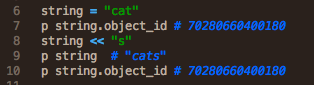

I've always been curious about functional programming, and seeing how this week's blog topic considers it, I thought it good to take the plunge and finally give it a little more research! The following is a basic comparison between functional programming and object-oriented programming.
First of all, there are three basic programming paradigms, four if you include object-oriented programming:
- Imperative Programming
- Logic Programming
- Functional Programming
Imperative programming follows the imperative mood in the same way it is utilized in natural language:
- "You, feed the cat."
- "Make my day."
It is often called procedural programming, and utilizes modifications, assignments, and control structure such as if-else statements. Can you see how those aspects of programming mirror the imperative sentences above?
As you might have noticed when playing around with the core language, Ruby supports imperative programming. Much of Ruby's object-oriented structure relies on imperative principles. This is something that makes object-oriented programming tick. If you're working with objects and methods, you need to rely on changing them, having them interact with other objects, and logging results in the form of even more objects!
Functional programming (and logic programming) are more on the declarative side of things. Why? Think about mathematics. In mathematics, theories exist without mutations. In other words, you can't change something while keeping its identity the same.
1 + 1 = 2
You often probably take it for granted, but the number one is an immutable concept. It is and only can ever represent a numerical one. Same for the number two. Thus, you can form an unalterable theory about how one and one interact. What if you could change the essence of one but keep its id the number one, the same?
It's useful to apply to this structure programming. Not everything should be imperative, and certain fields benefit from greater breadth. Transfer this over to programming languages, and think about strings. They exist as String objects. Many languages make these immutable. Ruby does not.
As you can see, the contents of the string object changes, but the id does not. Think about how this can create chaos, mathematically or even just in the code itself. Sometimes it's good to know an object's contents are rigid and can't be mutated. You can't build a theory around something you can't control!
The main principles of functional programming focus on dealing with immutables. There are no loops, assignments, mutable variables, or other imperative control structures in functional languages.
It also places an emphasis on the functions. This is another reason why object-oriented programming isn't considered to be a basic paradigm by some. You can actually implement some functional language principles in an OOP when you emphasize functions more in your code. JavaScript, for example, can mimic a functional programming language because its functions are objects. According to The Ruby Programming Language, "Ruby's methods are not objects in the way that strings, numbers, and arrays are. It is possible, however, to obtain a Method object that represents a given method, and we can invoke methods indirectly through Method objects."
In other words, you can get Ruby methods to show as an object via some work-around, but they're not fundamentally workable objects. A functional programming language places significant emphasis on the versatility of functions.
On the flip side, Ruby blocks work much in the way that functions do in functional languages. So, Ruby can act as a functional language. You just have to utilize its versatility.
The benefits of a functional language are simpler reasoning principles. If things can more appropriately mimic theory, than the code can more strictly accomplish goals. Functional programming is thus a smart way to expand on operations because functional code incorporates tighter, theory-derived computations. We get more brevity and concurrency. With mutations occurring in object-oriented programming, you can't execute much simultaneously. You wouldn't be able to be sure what is what at any given time.
But object-oriented programming is good for expansion of data. When you need to create more things to work with you utilize classes and methods. There is more emphasis on the importance of the objects you work with over the functions you use to manipulate them.
In simple terms, the differences are most apparent in their naming. Functional programming emphasizes the functions. Object-oriented programming emphasizes the objects.